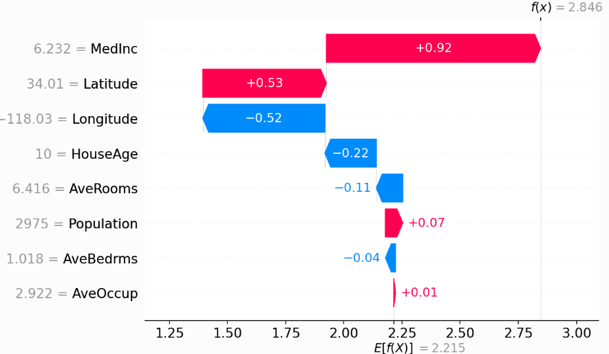
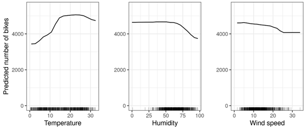
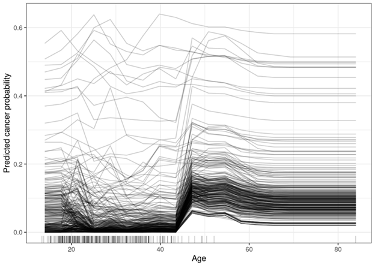

Unlocking the AI Black Box
The Case and Approach for Interpretable AI
Artificial Intelligence systems, particularly those employing deep learning, are increasingly deployed in critical domains such as healthcare, finance, and autonomous driving. Despite their impressive capabilities and utility, a major obstacle to their widespread trust and adoption is the “black box” problem. This term refers to the lack of transparency in how AI models, especially neural networks, arrive at their decisions. Let’s dive deeper into the implications of this issue and explore methods to mitigate it.
The Black Box Problem in AI
Modern AI models, such as deep neural networks, operate with millions or billions of parameters and complex architectures. While these configurations enable high performance in tasks like image recognition or natural language processing, they also obscure the decision-making processes from human understanding. For instance, in medical imaging, why does a convolutional neural network (CNN) classify a tumor as benign? In credit risk assessment, which inputs are most important to a gradient boosting model? Without clear insights into these processes, stakeholders such as developers, regulators, and end-users face challenges in debugging, improving, and trusting these systems.
The Importance of Interpretability
In certain low-risk settings, it may not matter why a model makes certain decisions. For example, a movie prediction algorithm does not have severe consequences for being incorrect. However, there are several circumstances where interpretability is important.
Safety & Reliability
In high-stakes applications, unexplained AI behavior can lead to catastrophic failures. In autonomous vehicles, a model’s opacity on why it misclassified an object on the road could result in fatal accidents. Clear explanations of model failures help data scientists identify and address underlying issues.
Bias & Discrimination
AI systems trained on biased datasets can propagate and amplify these biases. For example, a hiring algorithm trained on historical data may discriminate based on gender or ethnicity. Interpretability allows developers to identify and address these issues.
Regulatory Compliance
Regulations like the EU’s AI Act require transparency for high-risk AI systems (EUAIAct.com 2025). Non-compliance could result in significant legal and financial penalties. For example, banks are required to explain why certain loan requests are denied.
Model Improvement & Understanding
Developers need to understand model behavior to diagnose errors, optimize performance, and ensure generalization to unseen data. Understanding a model’s limitations enables developers to address edge cases effectively. Furthermore, a robust understanding of model predictions can help us understand more about the world. This is particularly important in a scientific context.
Approaches to Enhancing Interpretability
Several strategies exist to tackle the black box problem, and they can be broadly categorized into: (1) using interpretable models or (2) leveraging post-hoc techniques. There are two types of interpretability we will consider: local (i.e. why did my model make this specific prediction?) and global (which features are most important to my model?). This is an active area of research, and this blog post will scratch the surface of the most popular, traditional methods that you need to know.
Interpretable Models
In cases where transparency is highly important, some researchers opt for inherently interpretable models. Linear regression models provide both local and global interpretations, using coefficient weights. Decision trees are another example of an interpretable model, given the tree split thresholds and features. There is some research that these models do not sacrifice prediction performance in certain domains (Rudin and Radin 2019). However, this is not always the case and black-box models are often better suited to make predictions. In this case, post-hoc approaches are often used to explain model performance.
Post-Hoc Explanation Methods
Post-hoc analysis explain the behavior of a machine learning model after it has been trained. These methods aim to provide insights into how a model makes predictions, even if the model itself is complex and non-interpretable. Let’s explore some post-hoc approaches.
Surrogate Models
Surrogate models are simplified, interpretable models trained to mimic the behavior of a complex black-box model. The primary goal is to approximate the decision-making process of the original model in a way that humans can easily understand.
How It Works: Generate predictions from the black-box model for a given dataset. Then, train a simpler, interpretable model (e.g., a decision tree or linear regression) using the original input data and the predictions from the black-box model as the target.
This can identify global feature importances in any black-box model. However, the surrogate models are inherently less accurate and often oversimplify the problem. They may not fully capture the nuances of the black-box model.
LIME (Local Interpretable Model-Agnostic Explanations)
LIME is a popular technique for local interpretability for any machine learning model. It applies the same principle as surrogate models but zoomed in to a narrow data range.
How it works: Take a prediction you want to explain and generate a synthetic dataset by perturbing the instance’s features (e.g., adding noise or slightly modifying values). Obtain predictions for the perturbed samples from the black-box model and train a simple model (e.g., linear regression) using the perturbed samples as input and their corresponding predictions as the target. Finally, analyze the weights of the interpretable model to understand the importance of features for the specific prediction.
This approach is commonly used because it can be applied to any model flavour and it provides clear explanations for individual predictions. However, it can be computationally expensive for large datasets or complex models.
SHAP (SHapley Additive Explanations)
SHAP is another commonly used post-hoc analysis approach that can be applied to any model. It is rooted in cooperative game theory.
How It Works: Treat the prediction task as a cooperative game where features are players. Calculate the marginal contribution of each feature by comparing the model’s prediction with and without the feature. Aggregate these contributions across all possible combinations of features to compute Shapley values.
SHAP provides both local and global interpretations. It offers a theoretically sound and consistent feature importance values. However, it is computationally intensive, so approximations are usually required for complex models.
|  |
|---|
| SHAP values for a specific prediction. The features are along the y-axis and the prediction is on the x-axis. The figure should be read from bottom to top. (Lundberg 2018). |
Partial Dependence Plots (PDP)
Partial dependence plots illustrate the marginal effect of one or two features on the average prediction of a model. They are particularly useful for understanding how specific features influence the model’s output globally.
How It Works: With the value of the target feature(s) fixed at different levels, average the model’s predictions over all instances, keeping other features constant. Plot the results to visualize the feature’s impact (see figure below).
|  |
|---|
| Partial Dependence Plots for 3 separate features (Molnar 2024). |
PDPs are intuitive and easy to interpret. They are also useful for identifying non-linear relationships between features and predictions. On the other hand, this approach assumes feature independence, which may lead to misleading results in datasets with correlated features.
Individual Conditional Expectations (ICE)
ICE plots extend PDPs by showing the effect of a feature for individual data points rather than averaging across all data. Each line in an ICE plot represents the prediction trajectory for a single instance.
How It Works: Similar to PDPs, vary the target feature’s value across its range. Instead of averaging predictions, plot the trajectory for each individual instance (see figure below).
|  |
|---|
| ICE Plots for the feature Age and prediction Cancer Probability (Molnar 2024). |
ICE plots are used to uncover granular insights into feature effects at the instance level. They highlight heterogeneous effects that PDPs might obscure, but they can become easily cluttered with too many data points.
Comparison
| Method | Strengths | Limitations | Python Libraries | |
|---|---|---|---|---|
| Surrogate Models | Simple and interpretable; model-agnostic | May oversimplify black-box model | Scikit-learn | |
| LIME | Localized explanations; flexible | Computationally expensive; only local insights | LIME | |
| SHAP | Theoretically sound; global and local explanations | Computationally intensive | SHAP | |
| PDP | Intuitive; highlights feature relationships | Assumes feature independence | Scikit-learn, PDPbox | |
| ICE | Granular, instance-level insights | Can be cluttered | Scikit-learn, PDPbox |
The Path Forward
As artificial intelligence becomes more integral to critical applications, the need for interpretable models grows more urgent. From healthcare to finance to autonomous systems, the ability to explain how AI models arrive at their decisions is essential to ensuring safety, fairness, and compliance with regulatory standards.
Interpretability is not just a desirable feature but a necessity for responsible AI development. Transparent models enable stakeholders to enhance safety and reliability, mitigate bias and promote fairness, ensure regulatory compliance, and improve model performance.
While simpler, inherently interpretable models provide clarity, they are often unsuitable for the complexity of modern tasks. In these cases, advanced interpretability techniques allow us to gain insights into black-box models without sacrificing performance.
The path forward requires a concerted effort to balance AI’s growing complexity with its usability and trustworthiness. By embedding interpretability as a foundational principle, we can build AI systems that are not only powerful but also aligned with human values, enabling their safe integration into society.
If you want to learn more about the technical details of ML interpretability approaches included in this post, I strongly recommend Christoph Molnar’s book “Interpretable Machine Learning”.